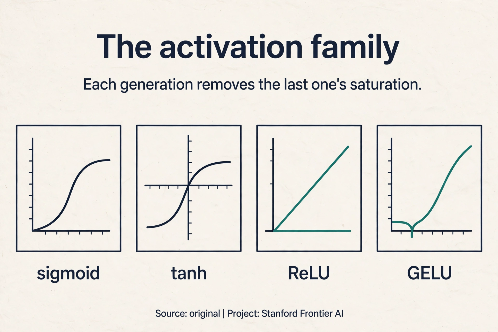
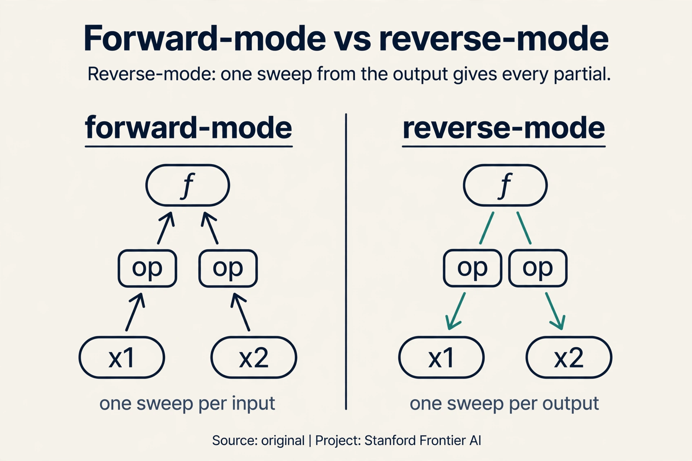

Lecture 3: Neural Networks and Backpropagation
Video blocked (ad-blocker or local file mode).
Watch on YouTubeVideo not loading? Watch on YouTube
Original lecture. Christopher Manning derives neural network layers, the chain rule, Jacobians, and backpropagation.
The problem: 4,008 directions
Lecture 2 built a neural classifier with 4,008 weights. SGD needs the gradient of the loss with respect to every one of them: which direction should each weight move to reduce the error? A modern network has billions of weights. The question of this lecture is brutally practical: how do you compute billions of gradients before the semester ends?
On this page: ReLU · GELU · Forward-mode vs reverse-mode · Autodiff in production · Watch and go deeper
The building block: a layer
A layer does two things (08:24 ⏱08:24).

- An affine map: z = Wx + b. Multiply by a weight matrix, add a bias vector. The bias is a threshold term: it shifts where the activation fires.
- An activation: h = sigma(z). A nonlinearity applied element by element.
Stack layers: the output of one becomes the input of the next. The whole network is a single composed function. Watch one tiny layer compute. Input x = [1, 2], weights W = [[1, 0], [0, 2]], bias b = [0.5, -1]:
z = Wx + b = [1*1 + 0*2 + 0.5, 0*1 + 2*2 - 1] = [1.5, 3.0] h = sigmoid(z) = [1/(1+e^-1.5), 1/(1+e^-3.0)] = [0.82, 0.95]
Two operations. The depth comes from composition: dozens of these, chained.
Why must the activation be nonlinear? Because affine maps compose into affine maps. A stack of linear layers, no matter how deep, is one linear layer. The nonlinearity is what gives the network its expressive power. History proves the point. In the 1940s the activation was a hard threshold: fire or not. A step has zero gradient almost everywhere, so gradient descent cannot learn: there is no slope to follow. The sigmoid smooths the step into an S-curve with a gradient everywhere. Learning needs differentiable activations.

Subchapter: ReLU, the unsaturated workhorse
Sigmoid won the 1990s. Then deeper networks exposed its flaw: it saturates. For large |z|, the S-curve flattens and its gradient dies. Tanh centers the curve at zero, which trains a little better, but it saturates too. ReLU (rectified linear unit) deletes the curve for positive z: max(0, z). Watch it against sigmoid on z = -2 and z = 3:
z = -2: sigmoid 0.12, gradient ~0.10 ReLU 0, gradient 0 z = 3: sigmoid 0.95, gradient ~0.05 ReLU 3, gradient 1
At z = 3 the sigmoid’s gradient has decayed to 0.05 while ReLU’s is exactly 1, forever, for every positive z. Deep stacks multiply many gradients: ReLU keeps them alive where sigmoid kills them. It is also one comparison instead of an exponential: cheaper. The price is dead neurons: a unit stuck at z < 0 gets zero gradient and never recovers. Sigmoid survives at the output layer, where probabilities are the job. Everywhere hidden, ReLU took over.
Subchapter: GELU, smoothness for transformers
ReLU has a kink at zero and kills negatives dead. GELU (Gaussian error linear unit) smooths both problems away: GELU(z) = z times the probability a standard normal is below z. Watch it on the same toys:
z = -2: ReLU 0 GELU -0.05 (small negative, not dead) z = 3: ReLU 3 GELU 2.99 (unsaturated, like ReLU)
For large z, GELU behaves like ReLU: no saturation, gradient near 1. Near zero it curves smoothly instead of kinking, and small negatives pass a small gradient instead of dying. BERT and GPT use GELU. The pattern across three generations: keep the old strength (unsaturated positives), remove the old weakness (saturation, then the kink and the dead zone). Depth demanded activations whose gradients survive.

Subchapter: forward-mode versus reverse-mode
Backprop is one of two ways to differentiate a program. Consider f(x1, x2) = x1 * x2 + sin(x1), at x1 = 2, x2 = 3. Two modes:
Forward-mode pushes derivatives forward alongside values. Seed one input’s derivative at 1 and the other’s at 0, then run the program once per input. Two inputs means two forward runs to get both partials.
Reverse-mode runs the values forward once, then sweeps derivatives backward from the single output. One backward sweep yields every input’s partial at once. Watch the sweep on the toy. Forward: a = x1*x2 = 6, b = sin(x1) = 0.91, f = 6.91. Backward: df/df = 1, df/da = 1, df/db = 1, df/dx2 = df/da * x1 = 2, df/dx1 = df/da * x2 + df/db * cos(x1) = 3 - 0.42 = 2.58. One sweep, both partials.
The rule: forward-mode costs one sweep per input, reverse-mode costs one sweep per output. Neural networks have millions of inputs (weights) and one output (the loss). Reverse-mode wins by a factor of millions. That is why backprop is reverse-mode automatic differentiation.

Affine maps compose into affine maps. A stack of linear layers is one linear layer, no matter how deep. The nonlinearity is what gives the network its expressive power. Steps have zero gradient almost everywhere, so gradient descent cannot learn. The sigmoid is smooth and differentiable. Its gradient tells the optimizer which direction to move.
First attempt: finite differences
The most obvious way to get a gradient: wiggle each weight a little and watch the loss. The finite difference estimate:
dL/dw ≈ (L(w + e) - L(w - e)) / 2e
Watch it on a toy. L(w) = w^2, w = 3, e = 0.001:
(L(3.001) - L(2.999)) / 0.002 = (9.006001 - 8.994001) / 0.002 = 6.0
The true derivative is 2w = 6. The estimate works. Now count the cost. Each weight needs two forward passes (w+e and w-e). Lecture 2’s tiny classifier has 4,008 weights: one gradient step costs 8,016 forward passes. A modern network with a billion weights needs two billion forward passes per step. Finite differences are correct and completely unusable at scale.
The key question
Can we compute every gradient in a single pass, by sharing the work between weights instead of repeating it for each one?
The chain rule: sharing the work
Neural networks are composed functions: s = f(h), h = g(z). To train, we need ds/dz. The chain rule multiplies the local gradients (33:15 ⏱33:15):

ds/dz = ds/dh x dh/dz
Watch it on a toy, by hand. X = 2, and the network is z = 3x + 1, h = z^2, s = h:
forward: z = 3*2 + 1 = 7 h = 7^2 = 49 s = 49
local: ds/dh = 1 dh/dz = 2z = 14 dz/dw = x = 2
chain: ds/dw = 1 * 14 * 2 = 28
check: w = 3.001 -> z = 7.002 -> h = 49.028004
(49.028004 - 49) / 0.001 = 28.0 ✓
The chain rule agrees with finite differences. The difference is that the chain rule reuses: ds/dh and dh/dz were computed once, and every weight’s gradient multiplies through the same local pieces.
For vector functions, each local gradient is a Jacobian matrix: the matrix of all partial derivatives (24:07 ⏱24:07). If h is a vector of length m and z a vector of length n, the Jacobian dh/dz is the m-by-n matrix whose (i,j) entry is dh_i/dz_j. The matrix version of the chain rule multiplies Jacobians. Same idea, more bookkeeping.
Forward applies, backward reuses
“Forward pass is just function application. Backward pass is the chain rule applied efficiently” (71:30 ⏱71:30).

Going down: apply each function, compute each value, and store every intermediate. In the toy above, the forward pass stores z = 7 and h = 49. Coming back up: multiply local Jacobians, reusing the stored values. dh/dz = 2z needs z = 7, which is sitting in storage. Nothing is recomputed. The stored values make the backward pass cheap.
The two facts of backpropagation
Backpropagation rests on two facts:
- The chain rule works on arbitrarily complex functions.
- Store intermediates and reuse them. Never recompute.
The second fact is where the efficiency lives. The wrong way: compute ds/db, ds/dw, ds/dx one at a time, redoing the shared subexpressions each time (58:29 ⏱58:29). Count the waste on a 10-layer network where each layer costs 1 unit of work. Computing each layer’s gradient separately re-does the shared forward work: the total is 10 + 9 + … + 1 = 55 units, and it grows quadratically with depth. The right way: one backward sweep, each intermediate computed once: 10 units, linear in depth.

One forward pass plus one backward pass yields every gradient in the network. Finite differences needed 8,016 forward passes for the tiny classifier. Backprop needs 2 passes total, and the ratio only gets better as networks grow. That is why training billion-parameter networks is possible at all.
The chain rule applied efficiently: one backward sweep that reuses every stored intermediate. Gradients share subexpressions. Computing each gradient independently repeats the shared parts, and the repeats grow with network depth: quadratic work. Reuse turns it into one linear sweep.
Autograd as Lego
Nobody hand-derives these Jacobians anymore. Modern frameworks implement backprop once. Each operation (matmul, sigmoid, softmax, loss) knows its own backward rule. Compose them like pieces of Lego and the gradients compose too (72:06 ⏱72:06).

When you write a new layer, verify it with gradient checking (68:40 ⏱68:40): compare the analytic gradient against a numeric finite difference. Finite differences need no calculus, so they are an independent witness. If they disagree, the backward rule is wrong. Check once, at small scale, then trust the fast analytic path.
Only when you implement a new operation by hand. Standard layers in PyTorch are already verified. Custom layers need one check against numeric gradients before training. Because they need no calculus: (f(x+e) - f(x-e)) / 2e works for any function. They are slow but independent of your derivation. Agreement means your math is right. Use them once, at small scale.
What is used where: autodiff in production
Reverse-mode differentiation runs every deep learning framework. The differences are in how the graph is built:
- PyTorch. Dynamic graphs, defined by running the code. Reverse-mode autograd records operations on a tape as they execute. Dominates research. Public.
- JAX. Function transforms: grad(f) returns the gradient function, jit compiles it, vmap vectorizes it. Google and DeepMind train large models on it. Public.
- TensorFlow. Static graphs compiled with XLA. Still runs much of industry production from the 2010s. Public.
- The constant. All three implement this lecture’s two facts: the chain rule on arbitrary compositions, intermediates stored and reused. The frameworks differ in plumbing, not in mathematics.
Network: z1 = W1 x + b1, h = ReLU(z1), z2 = W2 h + b2, loss L = (z2 - y)^2. Forward: compute and store x, z1, h, z2. Backward: dL/dz2 = 2(z2 - y). dL/dW2 = dL/dz2 x h. dL/dh = W2^T x dL/dz2. dL/dz1 = dL/dh where z1 > 0, else 0 (ReLU gate). dL/dW1 = dL/dz1 x x. Every step reuses a stored forward value. One sweep, all four parameter gradients. In dL/dz1. The local derivative of ReLU is 1 for z1 > 0 and 0 otherwise. The backward signal passes through unchanged or dies completely. That is the dead-neuron problem, visible in one line of the chain.
Gradient checking, once, at small scale. Build a tiny input (say 4 tokens, dimension 8). Compute analytic gradients via your backward. Compute numeric gradients via (f(x+e) - f(x-e)) / 2e with e = 1e-5. Compare with relative error: |analytic - numeric| / (|analytic| + |numeric|). Below 1e-5, ship it. Above, your backward rule is wrong. Never gradient-check the full model: too slow and pointless, since only your new op is unverified. Forgetting a term in the chain. The forward has three ops but the backward only chains two. The numeric check catches it instantly because finite differences differentiate the actual forward code, not your derivation.
When outputs outnumber inputs. Reverse-mode costs one sweep per output, forward-mode one per input. A physics simulator with 3 inputs and 10,000 outputs wants forward-mode. A neural network with 10 million weights and 1 loss wants reverse-mode. Count inputs versus outputs, then pick the cheaper mode. JAX does: jacfwd for forward-mode, jacrev for reverse-mode. PyTorch defaults to reverse-mode autograd. The choice is exposed where it matters and hidden where it does not.
Saturation. Sigmoid’s gradient dies for large |z|, and deep stacks multiply many dying gradients: the vanishing problem from this lecture’s honest price. ReLU’s gradient is exactly 1 for all positive z, so deep stacks stay trainable. It is also one comparison versus an exponential: cheaper. The cost is dead neurons, which later activations (GELU, Swish) smooth away. Different job. Hidden layers need trainable nonlinearities. Output layers need probabilities: numbers in [0,1] that sum to 1. Sigmoid and softmax are probability machines, not just nonlinearities. Keep each where its job lives.
Mapping back: what backprop answers
| Naive approach | Backprop answer | How |
|---|---|---|
| Finite differences: 2 passes per weight | One backward sweep for all weights | The chain rule shares local gradients across every parameter |
| Recomputing shared subexpressions: quadratic in depth | Store intermediates, reuse them | Each value computed once. 55 units becomes 10 for 10 layers |
| Hand-derived gradients for every new layer | Autograd Lego blocks | Each op carries its own backward rule. Compose freely |
The honest price
Two bills. First, memory: the backward pass needs every intermediate, so the forward pass must store them all. Deep networks on long sequences store a lot. Memory, not arithmetic, is often the training bottleneck.
Second, the chain rule multiplies. A gradient that travels back through 50 layers is a product of 50 local gradients. If each is 0.9, the product is 0.9^50 = 0.005: the signal dies. If each is 1.1, it is 1.1^50 = 117: the signal explodes. This is the vanishing and exploding gradient problem, and it is the reason Lecture 5’s RNNs struggle with long sentences.
Recap: the whole lesson on one screen
- The problem. SGD needs every gradient. The tiny classifier has 4,008 weights. Finite differences need 8,016 forward passes per step.
- A layer. z = Wx + b, then h = sigma(z). Affine, then nonlinear. Stacked layers compose one function.
- Smooth activations. The 1940s step has zero gradient. Nothing learns. The sigmoid smooths it so gradients flow.
- The chain rule. ds/dz = ds/dh x dh/dz. The toy: z = 7, h = 49, ds/dw = 28, verified by finite differences. Jacobians are the matrix version.
- Forward applies, backward reuses. Store every intermediate on the way down. Multiply local Jacobians on the way up. Never recompute.
- The two facts. The chain rule works on anything. Reuse turns quadratic work (55 units for 10 layers) into linear (10 units).
- Autograd is Lego. Each op knows its backward rule. New layer: verify once with gradient checking.
- The price. All intermediates must be stored. And the chain rule multiplies: 0.9^50 = 0.005 vanishes, 1.1^50 = 117 explodes. The next lectures cure this disease.
Watch and go deeper
Backpropagation, intuitively (3Blue1Brown). The chain rule as credit assignment, animated.
Go deeper
- Learning representations by back-propagating errors (Rumelhart, Hinton, Williams, 1986). The original backprop paper.
- Neural Networks: Zero to Hero (Andrej Karpathy). Build micrograd and backprop from zero, in code.
- Stanford CS224N course site. Slides, assignments, syllabus.
Official sources and further reading
Official: - Lecture 3 video and transcript.
Further reading: - Rumelhart, Hinton, Williams (1986), “Learning representations by back-propagating errors”: the original backprop paper. Historical context. The lecture’s two-fact framing is clearer. - PyTorch autograd documentation: how modern frameworks implement the backward sweep.
Caveats from these sources. Gradient checking is for custom layers only. Checking built-in layers wastes time. The finite-difference toy and the 10-layer cost arithmetic above are original teaching toys.
Connections to the other courses
- This course: L02’s NER classifier trains with backprop. L04’s parser and L05’s RNNs are deeper graphs through the same algorithm. L06 names the vanishing-gradient disease.
- CS229: the chain rule and Jacobians appear in the ML setting. optimization theory is shared.
- CS336: GPUs exist because the backward sweep is matrix multiplication at scale.
Sources
- VIDEOLecture 3 video, Stanford Online YouTube
- NOTESOfficial subtitle transcript
- SUPPLEMENTStanford CS224N course site